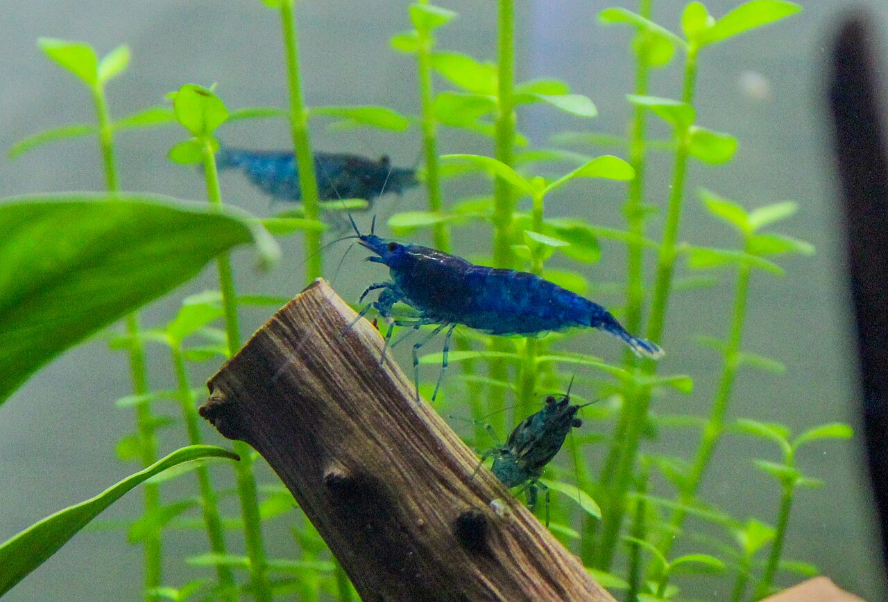

★ new

How to acclimate new shrimp: the drip method, without overcomplicating it
You spent $40 on shrimp. They arrived alive. The next two hours decide how many are still alive next week.

Bucephalandra: the beginner's guide to keeping "buce" alive
I killed my first three. Drowned them in CO2, baked them under a too-strong light, and — the fatal mistake — buried the rhizome.

Best nano fish for a 10 gallon planted tank in 2026
There are roughly fifteen species commonly recommended. Most are fine. A few really shouldn't be in a tank this size.